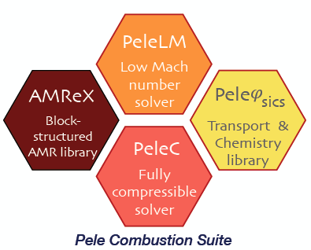

Introduction
Objectives and State-Of-The-Art
What we will call the PeleSuite is currently composed of 3 separate codes:
PelePhysics is a repository of physics databases and implementation code for use within the other Pele codes. In particular, the choice of chemistry and transport models as well as associated functions and capabilities are managed in PelePhysics.
PeleLM is an adaptive-mesh Low-Mach number hydrodynamics code for reacting flows. It has a sibling, PeleLMeX, that solves for the same type of flow using a subtly different numerical approach.
PeleC is an adaptive-mesh compressible hydrodynamics code for reacting flows.
All three codes rely on AMReX, which is a software frameworks that provides the data structure and enable massive parallelization.
 |
PelePhysics (as well as the ChemDriver object of PeleLM ) used to rely upon DVODE [VODE1989] to perform the chemistry integration, no matter the problem at hand. DVODE is a very robust, but slightly outdated, variable-coefficient Ordinary Differential Equation (ODE) solver written in Fortran 77. At its core, it uses a direct dense linear solver. DVODE is very efficient in the resolution of small stiff systems of equations but can become prohibitively expensive when dealing with bigger systems of equations, such as those frequently encountered in combustion systems.
In recent years, the Sundials team at LLNL [LLNL2005] has been involved in the active development of a modern, C++ version, of DVODE called CVODE. CVODE implements the same functionalities as those available in DVODE, but offers much more flexibility through its user-friendly set of interface routines. Additionally, other linear solvers are available, such as iterative or sparse solvers which can prove to be very efficient in handling “larger” systems of equations.
The objective of this user-guide is to document the CVODE-based chemistry integration implemented in PelePhysics. Although it is possible to use CVODE in PeleC, the following is mainly intended for PeleLM users. This user-guide will cover:
ODE equations (reactor type)
Default settings (tolerances/order/…)
Linear solvers available –along with examples of performance
Setting-up a PelePhysics test case
…